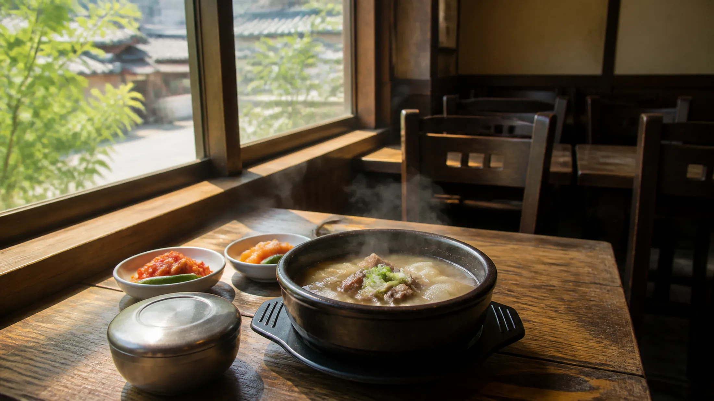
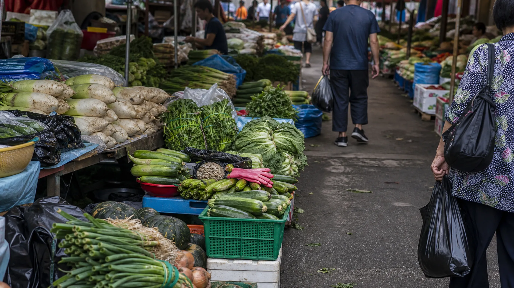
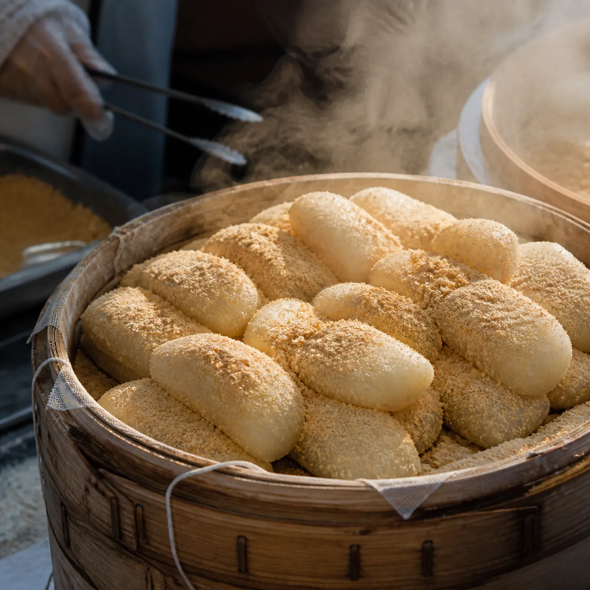
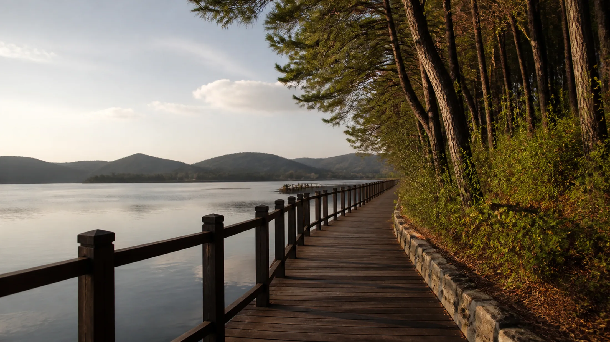
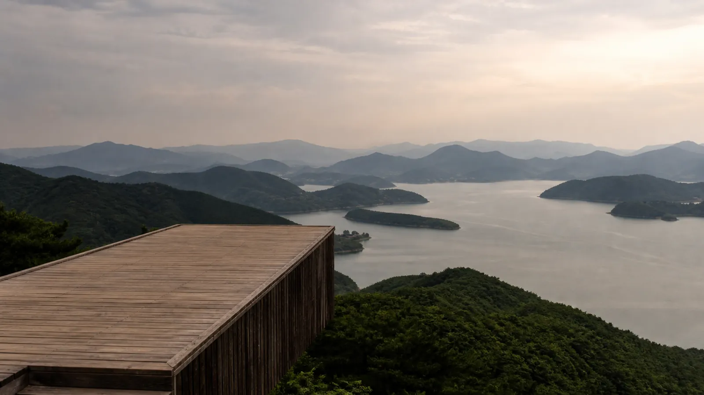
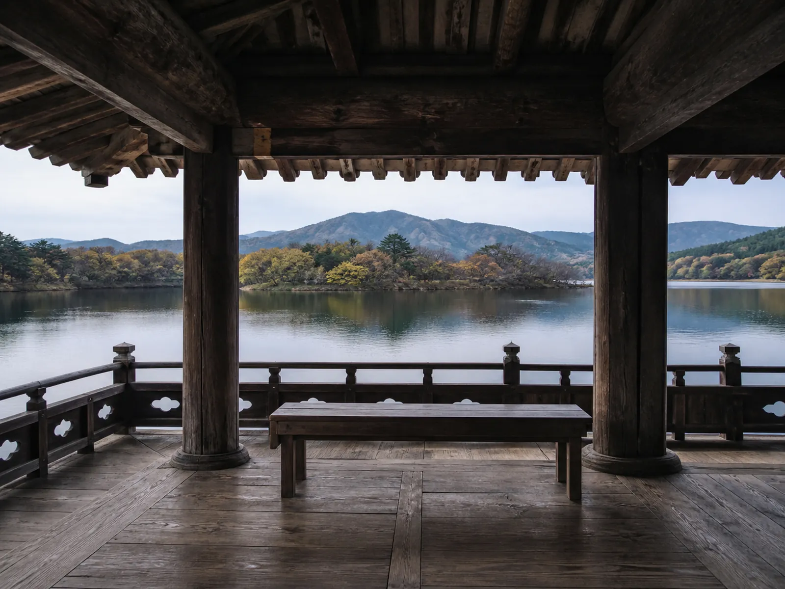
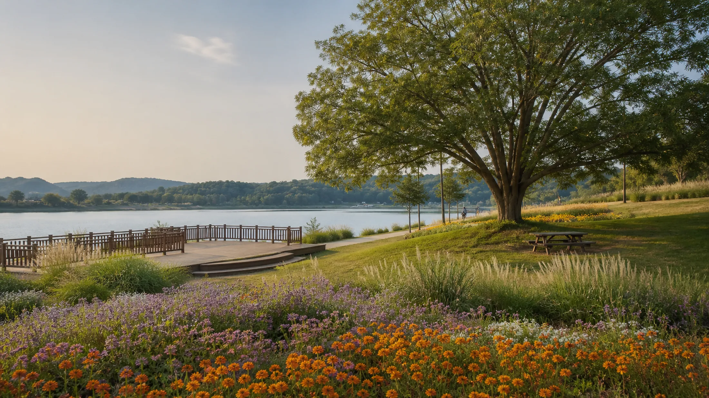
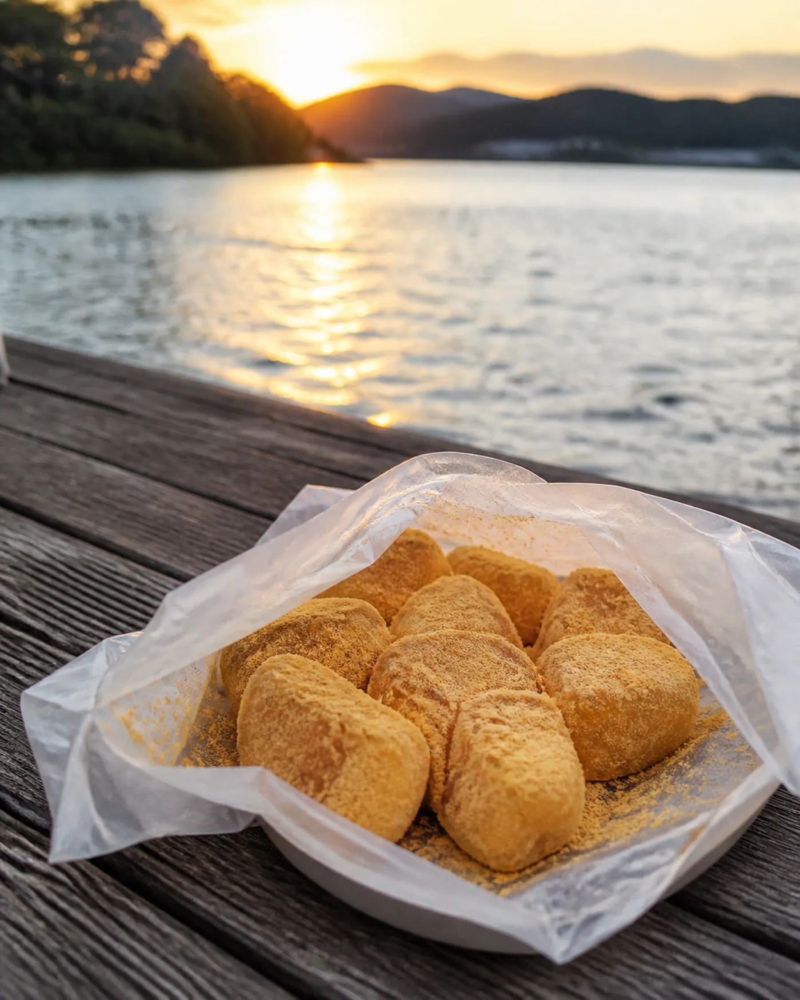

THE DAY
밥부터 먹기로 했다
여행지에서 시장을 먼저 도는 건 대개 실수다. 배가 고픈 상태로 매대를 지나면 판단이 흐려진다. 필요 없는 걸 사고, 정작 사야 할 건 놓친다.
그래서 이번엔 순서를 뒤집었다. 밥부터 먹었다.
글 안성마춤 웹진 편집부 · 사진 안성마춤 웹진 편집부
안성장터국밥
정오 전에 들어선 집
정오 전에 들어선 국밥집은 아직 조용했다. 점심 피크는 삼십 분쯤 뒤에 온다. 문을 열자 냄새가 먼저 알려준다. 아, 아침부터 끓이고 있었구나. 국물 냄새는 오래 끓인 시간을 숨기지 못한다.
주문하고 앉아 있으면 주방에서 뚜껑을 여닫는 소리가 들린다. 그 소리를 세다 보면 뚝배기가 온다.
한 그릇을 어떻게 먹었는지는 01 FOCUS에 따로 적었다.
나올 때는 땀이 식어 있고, 이상하게 걸음이 가볍다. 뜨거운 걸 먹고 나서 시원해지는 이 역설을, 여름에 국밥을 먹어 본 사람은 안다.

안성시장 · 1시간
배부른 사람의 장 구경
안성시장 장날은 2와 7로 끝나는 날이다. 2일, 7일, 12일, 17일, 22일, 27일. 한 달에 여섯 번인데, 주말에 걸리는 날은 그중 한두 번뿐이다. 9월은 12일 토요일과 27일 일요일, 딱 이틀이다.
그러니까 이 여행은 날짜부터가 반쯤 정해져 있는 셈이다.
시장에 들어서면 먼저 소리가 온다. 상인이 손님을 부르는 소리, 비닐봉지 부스럭거리는 소리, 어딘가에서 쉬지 않고 돌아가는 기계 소리. 매대는 넓게 퍼져 있고, 채소와 과일 사이에 생활용품 좌판이 아무렇지 않게 섞여 있다. 고무장갑 옆에 애호박이 놓여 있는 식이다.
배가 부르니까 눈이 정확해진다. 아까 그 국밥에 들어 있던 무가 여기 이렇게 쌓여 있구나, 하는 게 보인다. 먹고 나서 재료를 보는 순서가 되니 시장이 다르게 읽힌다.
한 시간이면 넉넉히 돈다. 다만 여름 장터에서 초반에 무거운 짐을 만드는 건 자살행위다. 무게가 나가는 건 마지막 십 분에 몰아서 산다.
떡집 앞에서는 결국 멈췄다. 김이 오르는 시루 앞에 서면 그냥은 못 지나간다. 인절미를 포장해 차에 실었다. 이때 산 떡은 여섯 시간 뒤에 다시 등장한다. 그건 나중 이야기다.


금광호수 청록뜰 주차장
물가에 도착한다
차로 이동한다. 창밖 풍경이 시내에서 논으로, 논에서 산자락으로 바뀐다.
금광호수 청록뜰 주차장에 차를 대고 내리면 공기가 바뀌어 있다. 시내보다 확실히 서늘하다. 물이 가까이 있다는 게 피부로 먼저 온다.
여기서부터 저녁까지는 계속 걷는다. 차는 두고 간다.
금북정맥 탐방안내소 · 20분
오늘 걸을 길을 먼저 본다
금북정맥 탐방안내소에 들렀다.
정맥(正脈)이라는 말은 산줄기를 가리킨다. 백두대간에서 갈라져 나온 큰 줄기 중 하나가 금북정맥이고, 그 자락이 이 호수 뒤로 지나간다. 오늘 우리가 걸을 길은 그 거대한 줄기의 아주 짧은 한 토막인 셈이다.
지도 앞에 이십 분쯤 서 있었다. 앞으로 갈 지점들의 이름을 눈으로 한 번씩 짚어 두면, 걷는 동안 방향 감각이 완전히 달라진다. 지금 내가 어디쯤 왔는지를 알면서 걷는 것과 모르고 걷는 것은 같은 길이 아니다.
물통을 채우고 신발끈을 다시 묶었다.
박두진문학길 입구
시인의 이름이 붙은 길
박두진문학길 입구에 선다.
박두진은 안성에서 태어난 시인이다. 청록파. 자연을 오래 들여다보고 쓴 사람의 이름이 물가 산책로에 붙어 있다는 게, 걷기 시작하는 순간 조금 이해된다.
수변데크와 숲길이 번갈아 나온다. 데크 위를 걸을 때는 발밑에서 나무 소리가 나고, 옆으로 물이 계속 따라온다. 숲길로 들어가면 소리가 갑자기 줄어든다. 매미 소리만 남는다. 8월 말 매미 소리는 7월과 다르다. 어딘가 급하다.
땀이 난다. 그런데 아침에 국밥 먹을 때 흘린 땀과는 종류가 다르다.

하늘전망대 · 10분
위에서 내려다보는 10분
하늘전망대에 올라선다. 2024년 가을에 문을 연 곳이다.
여기서부터는 말이 줄어든다. 아래로 호수가 펼쳐지고, 그 뒤로 산자락이 겹겹이 포개진다. 가까운 능선은 진하고 먼 능선은 옅다. 수묵화에서 본 그 농담(濃淡)이 실제로 저렇게 생겼다는 걸 여기서 알게 된다.
십 분이면 충분하다. 오래 있을 필요가 없다. 사진을 몇 장 찍고, 결국 찍기를 그만두고 그냥 봤다. 사진으로는 안 되는 게 있다.
내려가는 길에 한 번 더 돌아봤다.

해산정 · 10분
앉았다 간다
해산정에 도착했다.
길 중간에 이런 자리가 있다는 게 고맙다. 십 분쯤 앉아 있었다. 걷다가 앉으면 그제야 들리는 소리가 있다. 물이 가장자리를 치는 소리, 나뭇잎이 서로 스치는 소리. 걸을 때는 내 발소리에 묻혀 안 들리던 것들이다.
땀이 마르는 동안 물을 마셨다. 다시 일어설 때 다리가 조금 무거워졌다는 걸 느꼈다. 오늘의 절반 지점이라는 뜻이다.

수석정수변화원 · 20분
꽃이 있는 자리
수석정수변화원에 도착한다. 2025년 봄에 완공된 곳이다.
전망데크가 있고, 피크닉장이 있고, 느티나무가 서 있는 언덕이 있고, 화원이 있다. 걸어서 도착하면 차로 온 사람들과는 다른 마음이 된다. 한 시간 넘게 걸어서 여기까지 왔다는 사실이, 이 장소를 조금 더 특별하게 만든다.
이십 분 동안 화원을 한 바퀴 돌았다. 계절에 따라 피는 게 다르다니, 다음에 오면 다른 걸 보게 될 것이다.
옆에서는 아이들이 뛰고, 그 옆에서는 누군가 돗자리를 펴고 누워 있었다. 다들 아무것도 안 하고 있었다. 그게 이 장소가 잘 만들어졌다는 증거 같았다.

데크 쉼터 · 40분
떡을 꺼낸다
데크 쉼터에 자리를 잡았다.
가방에서 떡을 꺼냈다. 낮에 시장에서 산 인절미다. 여섯 시간 전에는 김이 오르고 있었는데 지금은 식어서 단단해졌다. 그런데 이상하게 지금이 더 맛있다. 걷고 나서 먹는 떡은 다른 음식이다.
호수를 보면서 떡을 먹는 일에는 별다른 설명이 필요 없다.
여기서 오래 앉아 있었다. 오늘 하루 중 가장 오래 아무것도 안 한 시간이었다. 사실 이 시간을 만들려고 종일 걸은 것 같기도 하다.
